The assistant does the digging. The person makes the call.
This is me walking you through what I built and why. An approvals-triage assistant that investigates every expense so a person only has to decide. One rule holds the whole thing together: code decides who gets approved, the model reads what code cannot, and the model can send a case to a human but can never send one the other way.
The brief describes an approvals team doing archaeology by hand. A seven-step manual review against a policy cap document no system enforces. Receipts eyeballed against claims. Duplicates checked in a spreadsheet. Emails to employees, waits, re-reviews. It asks for two things: clear the happy path fast, and give the approver an AI-assisted way through the cases the assistant cannot resolve on its own.
The case the brief asked for, in its own words
"As a member of FlowCo's internal Approvals team, when the assistant can't resolve something, a policy exception, an ambiguous receipt, a possible duplicate, I want an AI-assisted way to triage and clear it fast, so I'm not manually digging through every flagged case."
What I built is a working approvals console on a live URL, deployed on Vercel with Supabase behind it. Thirty-eight expenses from an India-based team sit in the queue: rupee receipts, Singapore dollar receipts, phone photos, PDFs, one file that is not a receipt at all. One button runs the assistant across all of them. Below is what that run did, live, while I was writing this document.
One triage run, measured
38
Expenses submitted
10
Auto-cleared
28
Sent to a person
$93.78
Non-reimbursable caught
That $93.78 is money the assistant found that policy says not to pay as claimed: an alcohol line ($11.92), an in-room movie ($16.55), a foreign-exchange over-claim ($61.12), a personal book ($3.69), and fifty cents of gray zone. Every number is produced by claude-opus-4-8 reading real receipt photos and PDFs at run time. Nothing in this document is hard-coded.
The rest of this walkthrough goes in order: how the product works, how the AI inside it works, why I built it the way I did, the corner cases one by one, and the place where the model failed until I took the decision away from it.
FlowCo · Approvals Triage · Walkthrough01 / 15
02How it works
One click, and the queue sorts itself
Press Run assistant triage. The deterministic checks run first: caps, limits, duplicate candidates, receipt presence, cost center, currency. Then the model reads every receipt, photo or PDF, in its own currency, and reconciles it against the claim. The thirty-eight submissions settle into two lanes: a green lane the approver can clear in one click, and a review lane where every case arrives with the digging already done.
The queue after this run. Ten cases in the Ready-to-clear lane with a single Approve-all button. Each foreign amount shows the original next to the converted dollars, so the Swiggy lunch reads ₹1,950 and $20.38 at once. The headline is the $93.78 the assistant caught. The filter chips count every reason a case stopped: 19 foreign currency, 8 possible duplicates, 6 over cap, 4 date mismatches, down to the one file that is not a receipt.
The lane is the product
Auto-clear is earned, not assumed. A case reaches the green lane only when every code check passes and the model found nothing to question. That is what makes one click safe. A model verdict alone cannot put anything there.
Every case opens into evidence
Clicking a row opens the drawer: the one-line recommendation, a reconciliation ledger when money comes off, the receipt beside what the assistant read from it, every check with its result, and a drafted message when something is missing. The approver reads a conclusion first and the detail only if they want it.
FlowCo · Approvals Triage · Walkthrough02 / 15
03How the AI works
Code decides who gets approved. The model reads what code cannot.
This is the decision the whole product rests on. The model never routes a case to approval. Code owns the money math and the routing. The model does the parts only a model can do: read a crumpled photo, find the alcohol line, judge whether two similar bills are one dinner or two, explain itself, and draft the message. The two meet at a guardrail that can only ever make routing stricter.
Deterministic checks, pure code
Policy caps per category. Meals $100, travel $500, lodging $250 a night, software $200, other $100.
Amount limits. One-click under $500, always-review over $1,000.
Duplicate detection. Same person and merchant, same day or same amount within 3 days.
Receipt presence above $25, cost center against department, currency against the reference rate.
Model, claude-opus-4-8, vision
Reads the receipt. Line items, handwriting, foreign taxes, photo or PDF.
Finds what code cannot. Alcohol, a personal item, a file that is not a receipt.
Reconciles the claim against the receipt in the receipt's own currency.
Names its own doubt in a required unresolved list, and drafts the message to the employee.
The routing guardrail
A case auto-clears only when every code check passes, the model's confidence is at least 0.8, the receipt reconciles, and the model found no alcohol, no personal item, no category mismatch, no date gap, and no legibility doubt. The model can send a case to a human. There is no path back.
Under the hood, every verdict comes back through schema-constrained structured output: the SDK validates the model's answer against a Zod schema before any of my code touches it, with adaptive thinking turned on for the hard receipts. No JSON fences, no type flips, no free-text parsing. The unresolved list and the confidence score are required fields, so doubt cannot hide in prose.
The prompt carries the policy verbatim, the deterministic check results, and the receipt itself. The model sees everything the approver would have dug up. Its job is to finish the digging, not to decide.
FlowCo · Approvals Triage · Walkthrough03 / 15
04Why it is built this way
Every rule exists because something breaks without it
Four decisions carry the product. Each one came from watching the alternative fail.
Code does the money math
Caps, thresholds, duplicate windows, and currency conversion are arithmetic, and arithmetic wants determinism. A function converts ₹16,823 the same way every time and leaves an audit trail; a model asked to do the same can round, drift, or improvise. So the model reports what the receipt says, and code computes what that means for the payout.
The model never approves
Not as a slogan, as a code path. There is no branch in the engine where a model output flips a case to approved. Page 12 shows the probe that forced this rule: given decision authority, a capable model became a coin flip in exactly the gray zone where the decision matters. The guardrail exists so that failure mode cannot reach payroll.
Currency converts in code, at a rate policy owns
The reference rates live in the policy file, and one shared function converts on both surfaces, the employee's submit and the approver's queue. A rupee receipt can never enter the queue pretending to be dollars. The model's currency job is different and harder: read the receipt in its own currency and check the claim's implied rate against the reference. That is how a $61 over-conversion gets caught on page 7.
Clean cases pool in one lane
The brief's happy path is an expense under $500 where everything matches. Those cases are not individually interesting, so the product treats them as a batch: one lane, one button, one keystroke. The approver's attention is spent only where the assistant found something to spend it on. Every decision raises an Undo, and every AI action lands in an append-only audit trail on the case.
The shape of the product
A "no alcohol" rule cannot exist in code, because nothing in the structured claim says what was ordered. Only the model can find it. But the model does not get to approve around it: the guardrail refuses to clear any receipt with a non-reimbursable line. The model owns the reading. Code owns the consequence.
FlowCo · Approvals Triage · Walkthrough04 / 15
05The signature case
Reading a receipt for a thing no field can hold
This is the case that settled the architecture for me. A real, crumpled phone photo of a ₹16,823 team dinner in Goa. Rupees, GST, a separate VAT line. Code flags that it is over the meals cap and in a foreign currency. The thing that actually changes the payout is invisible to code.
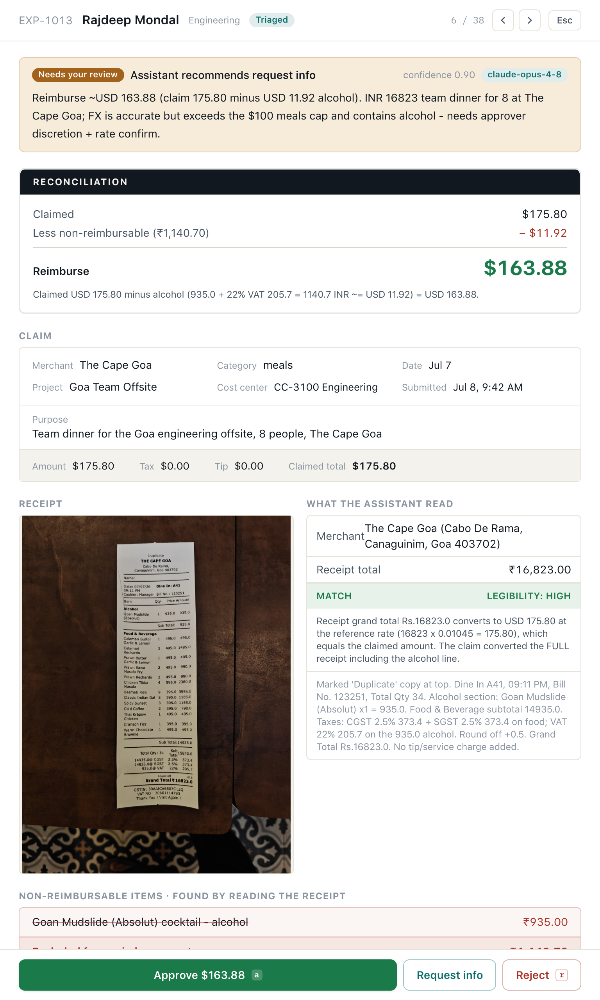
One line, ₹935, that moves the number
The receipt has one alcohol line, a Goan Mudslide. Nothing in the structured claim says the word alcohol. Only reading the receipt finds it. The assistant does four things code cannot.
Finds the ₹935 cocktail and its own 22% VAT of ₹205.70.
Confirms the ₹16,823 total converts to the claimed $175.80 at the reference rate.
Reads the word "Duplicate" printed on the bill and calls it a reprint, not a second claim.
Hands the approver the exact number to pay, $163.88.
Then it stops. The dinner is still over the $100 meals cap. That is a policy exception, and that is the approver's call, with the offsite purpose laid out beside the button. The model prepared the decision. It did not make it.
policy exceptionambiguous receiptforeign currency
The three cases the brief names, in one real receipt.
FlowCo · Approvals Triage · Walkthrough05 / 15
06Corner cases · deductions and doubt
Money that has to come off, and a receipt it will not guess at
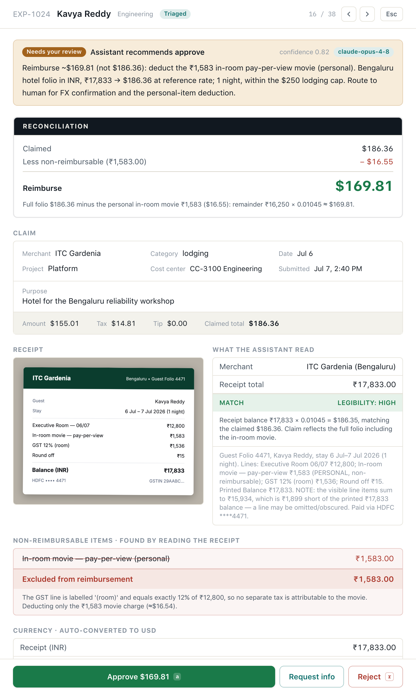
EXP-1024 · non-reimbursable
A personal item on a hotel folio
An ITC Gardenia folio, ₹17,833 converting to $186.36, hides a ₹1,583 in-room movie. The model deducts it, notices the GST line belongs to the room alone so no tax follows the movie, and lands the reimbursable at $169.81. It also flags that the visible lines sum short of the printed balance, so the approver knows to glance at the folio.
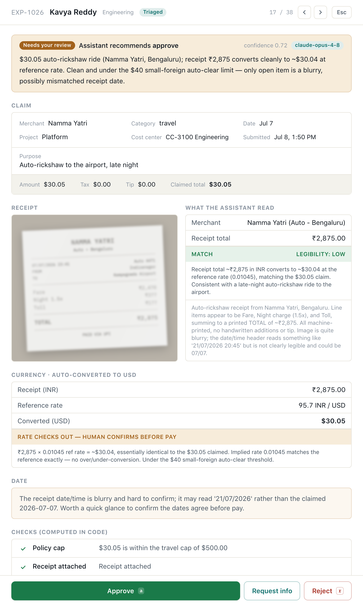
EXP-1026 · vision honesty
A receipt it cannot fully read
A blurry auto-rickshaw receipt. The model reads what it can, and the ₹2,875 total does reconcile with the claim, but it rates its own read low-legibility and cannot confirm the date. The guardrail sends any low-legibility read to a person, reconciled or not. Guessing is not confirming.
The line under both
When money has to move or a number is unclear, a person confirms it. The assistant's job is to make that take five seconds: here is the amount to deduct, here is exactly what I could not read. It does not make the call.
The reconciliation ledger is the signature interaction. Whenever money comes off, for alcohol, a personal item, or a currency gap, the panel shows one ledger: claimed, then deductions, then Reimburse. The approve button carries the corrected number, not the claimed one.
FlowCo · Approvals Triage · Walkthrough06 / 15
07Corner cases · currency
The team pays in rupees. FlowCo pays in dollars. Code does the math.
Twenty-eight of the thirty-eight receipts are foreign: twenty-six in rupees, two in Singapore dollars. Reimbursement is in dollars. Code converts every receipt at this cycle's reference rates, 1 USD is about 95.7 INR and about 1.294 SGD, stores the claim in USD, and shows the original amount beside the converted one. A small foreign amount, $40 or less, that converts cleanly clears on its own; anything larger waits for a person to confirm the rate before pay. A viewer can flip the whole console between USD and INR with one toggle.
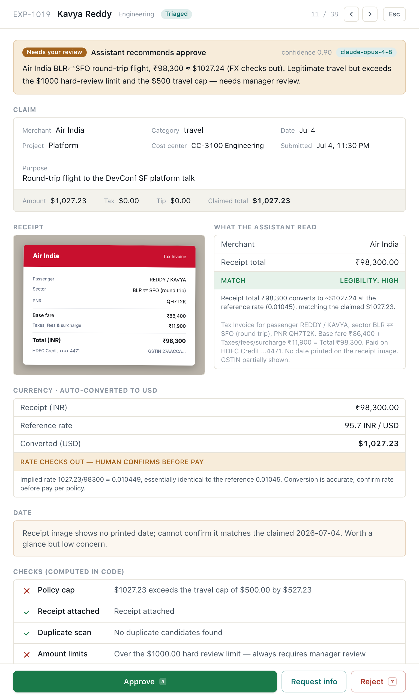
The conversion, shown plainly. A ₹98,300 Air India round trip converts to exactly the claimed $1,027.23 at the reference rate. The conversion is clean; the case is held anyway, because it crosses the $1,000 manager-review line. Code caught both facts.
Where conversion earns its place
Two cases prove it does real work.
A Singapore hotel. S$225 on the receipt, claimed as $235. At the reference rate S$225 is about $173.88, so the claim's implied rate is 1.04 dollars per Singapore dollar against a reference of 0.77. The model reads the receipt in its own currency, names the roughly $61 over-claim, and asks a person to check it.
The submit side too. An employee types "team dinner, about ₹6,400". The draft comes back as ₹6,400 paid, $66.88 to reimburse, never a $6,400 claim. The same conversion function runs on both surfaces.
A raw dollar figure hides a foreign over-claim. The receipt in its own currency does not.
₹1,950→$20.38Swiggy lunch, cleared
S$62.00→$47.91Singapore dinner, rate confirm
S$225→$173.88claim said $235, flagged
FlowCo · Approvals Triage · Walkthrough07 / 15
08Corner cases · judgment
Intent, not just arithmetic
Code catches what is measurably wrong. These four are wrong in ways only reading and reasoning surface. Each still goes to a person, because a judgment about intent is the approver's to confirm.
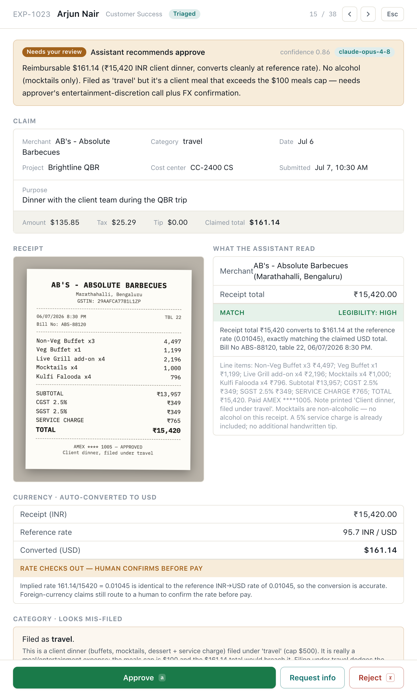
EXP-1023 · mis-categorization
A dinner filed as travel
A ₹15,420 client dinner at a barbecue restaurant, filed as travel, cap $500, instead of meals, cap $100. The converted $161.14 would breach the meals cap. The model names the category that does not fit and the cap it dodges.
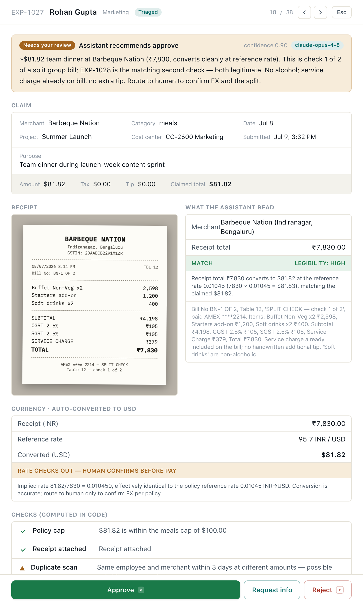
EXP-1027 and 1028 · cap avoidance
One dinner, split to duck the cap
Two Barbeque Nation checks, same table, same card, minutes apart, marked check 1 of 2 and 2 of 2. The model puts the ₹15,490 back together, about $162 against a $100 cap, and flags it as one dinner split to keep each half under.
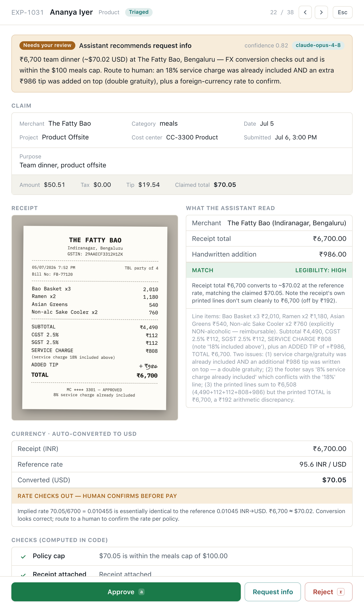
EXP-1031 · double gratuity
Tipped twice
An 18% service charge already printed on the bill, plus a ₹986 tip added on top. The model catches the double gratuity, and reads the non-alcoholic sake cooler correctly so it does not false-flag alcohol.
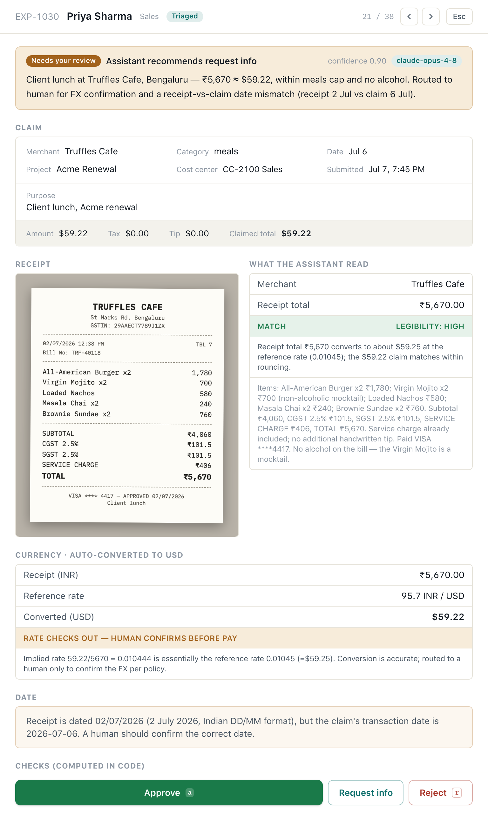
EXP-1030 · date reconciliation
A receipt dated wrong
The bill reads 2 July. The claim says 6 July. The amounts match, so nothing else trips. The model flags the four-day gap, and a code rule keeps any date mismatch from auto-clearing.
FlowCo · Approvals Triage · Walkthrough08 / 15
09Corner cases · duplicates
Telling a real double-submission from a coincidence
Possible duplicate is one of the three cases the brief names. Code flags the candidates: same person, same merchant, close in time. The hard part, and the model's real job, is saying which kind each one is.
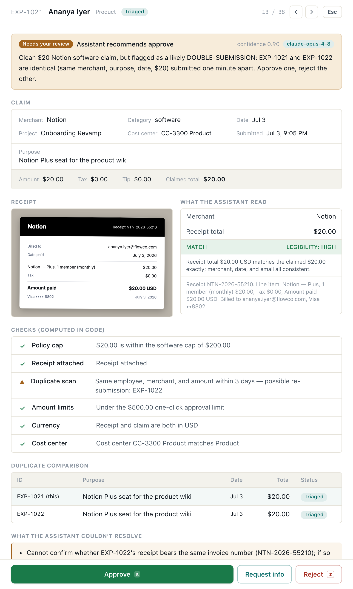
reject oneA real double-submission. The same $20 Notion seat, same day, one minute apart, the same receipt with the same invoice number attached twice. The model's call is to approve one and reject the other. Money FlowCo would otherwise pay twice.
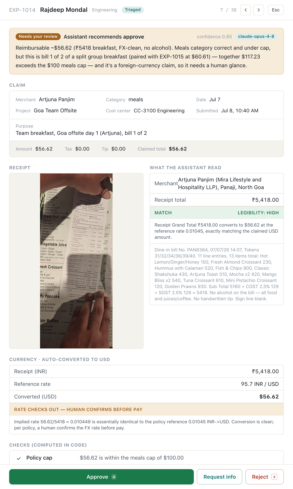
a real splitA coincidence that looks the same to code. Two Goa breakfast bills, same cafe, same day, but different items and consecutive bill numbers, PAN8384 and PAN8385. The model reads both receipts and calls it a genuine split of one group breakfast, with the one open question named: together they cross the meals cap.
Why this is the depth of it
A spreadsheet lookup flags both of these. A naive assistant would reject both or approve both. Telling them apart takes reading the two receipts and reasoning about what happened at that table. That is where the model earns its keep, not in the flagging.
FlowCo · Approvals Triage · Walkthrough09 / 15
10Corner cases · junk uploads
A file that is not a receipt gets caught, not reconciled
People upload the wrong file. A naive reader would extract an amount from it anyway. This one checks first that the file is a receipt at all. If it is not, it says what the file actually is, refuses to invent a number, and sends the case to a person with the ask already drafted.
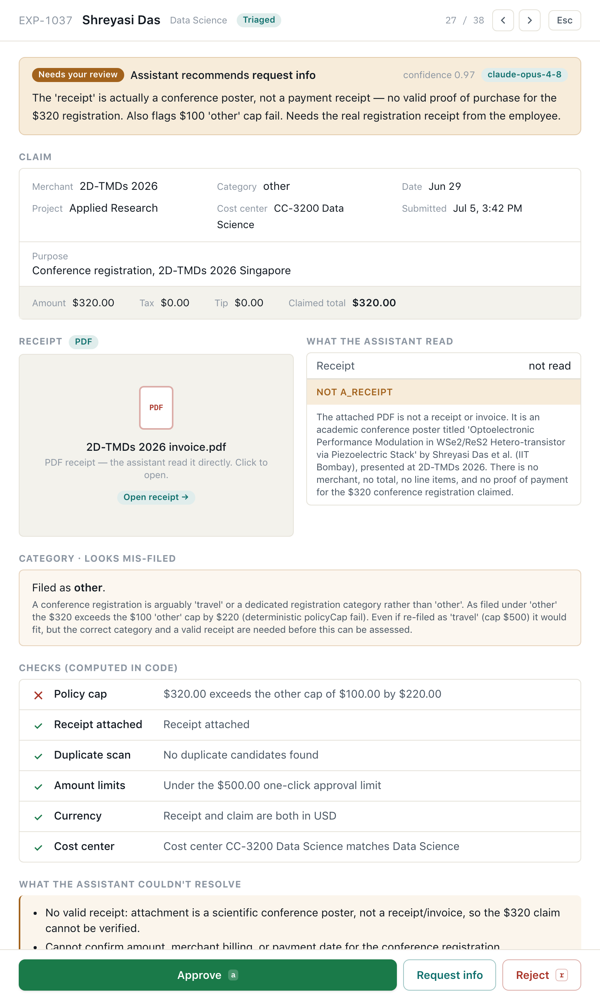
A conference poster, filed as a $320 registration
An employee back from a Singapore research conference uploaded the PDF of her own poster instead of the registration receipt. The model reads it, sees a scientific poster about a semiconductor device, and says so.
Marks the receipt status not_a_receipt.
Names the file: a conference research poster, not a payment record.
Drafts the note asking for the actual registration receipt.
Sends it to a person. It never fabricates the $320.
A neighboring case is the inverse: a real Amazon invoice for a personal-finance book, ₹352.80 converting to $3.69, expensed to the company. The receipt is genuine; the purchase is personal. The model reads the title, calls it a personal purchase with no business justification, and sets the reimbursable at zero pending one. A personal purchase does not become reimbursable by being small.
not a receiptpersonal purchase
FlowCo · Approvals Triage · Walkthrough10 / 15
11Proof of coverage
Every reason a case stops, mapped to a check and a live case
Nothing in this document is claimed without a case you can open on the live URL. This is the whole surface on one page.
Reason a case stops
Enforced by
Live case
Outcome
Amount over a policy cap
code
EXP-1009 Farzi Cafe
over meals cap by $84.96, to a person
Receipt does not match the claim
model
EXP-1008 handwritten tip
gray zone, to a person
Missing receipt above $25
code
EXP-1018
flagged, message drafted
Wrong cost center or GL code
code
EXP-1017
department does not match
Over $1,000, manager review
code
EXP-1019 Air India
always to a person
Over $500, beyond one click
code
EXP-1020 SaaSBOOMi
to review
Real double-submission
code, model
EXP-1021 and 1022 Notion
reject the duplicate
Legitimate split, not a duplicate
code, model
EXP-1014 and 1015 Artjuna
read as one breakfast, split confirmed
Cap-avoidance split
model
EXP-1027 and 1028 Barbeque Nation
one dinner, flagged
Alcohol on the receipt
model
EXP-1013 Goa dinner
deducted, reimburse $163.88
Personal item on the receipt
model
EXP-1024 ITC hotel
deducted, reimburse $169.81
Whole purchase is personal
model
EXP-1033 Amazon book
reimbursable $0, to a person
Mis-categorization to dodge a cap
model
EXP-1023 barbecue as travel
category flagged
Illegible receipt
model, guardrail
EXP-1026 blurry auto
low legibility, to a person
Foreign currency, auto-converted
code, model
every INR and SGD receipt
converted, rate confirmed
Foreign over-claim
model
EXP-1029 Singapore hotel
implied rate too high, reimburse $173.88
Receipt date does not match the claim
model, guardrail
EXP-1030 Truffles
date gap, to a person
Double gratuity
model
EXP-1031 service plus tip
flagged to confirm
File is not a receipt
model
EXP-1037 conference poster
refused, asks for the receipt
Receipt is a PDF, not a photo
model
EXP-1025 Canva, 1035 Agoda
read and reconciled
Clean and under $500, one click
code, model
EXP-1001 to 1007 and three more
the 10-case auto-clear lane
FlowCo · Approvals Triage · Walkthrough11 / 15
12Where the model got it wrong
A capable model, handed the decision, became an unreliable decider
Before any of the structure above, I built the naive version. One prompt, the receipt, extract the total and decide. I set a trap: a receipt that supports $84.50 and a claim of $85.00, a fifty-cent gray-zone over-claim, the exact thing triage exists to catch. I expected the model to misread the handwriting. It did not. Four correct reads out of four. Reading was not the weak point. This was.
// same receipt, $84.50. same claim, $85.00. three identical runs, verbatim.
Run 1 "decision": "flag_for_review"// correct
Run 2 "decision": "approved"// "approve at $84.50 rather than the claimed $85.00"
Run 3 "decision": "approve"// "approve for $84.50 ... or request clarification"
Three failures in one probe. It flipped its decision on identical input, a coin flip in exactly the gray zone. It invented an action, approve at the corrected amount, a partial reimbursement the product does not have. And its output changed shape run to run, approve against approved, which breaks any queue built on top.
Each failure became a rule
What the naive model did
What changed in the shipped engine
Gray-zone routing was a coin flip
Routing is code. Any mismatch, failed check, or confidence under 0.8 goes to a person, every time. The model can only make routing stricter.
Invented "approve at the corrected amount"
Recommendations are a fixed set of actions that exist: approve, reject, request info. The person holds the only approve button on a flagged case.
Output changed shape between runs
Structured output validates every verdict against a schema. No fences, no type flips.
Doubt was buried in prose
The unresolved list is a required field. The model has to name what it could not settle, and the queue leads with it.
The lesson
The applied-AI work here was not perception. The model reads receipts better than I do. It was decision rights and output discipline. A capable model handed decision authority becomes an unreliable decider in exactly the ambiguous cases where the decision matters most. So code decides who decides, and the model does what only it can.
That same $85 case is EXP-1008 in the app today. It goes to a person every time, with the fifty-cent gap named and the message drafted. The fix is live, and the verbatim probe transcripts are in the repo.
FlowCo · Approvals Triage · Walkthrough12 / 15
13The employee side
Seven screens, replaced by one sentence and a photo
The brief's optional side: submit an expense by describing it instead of filling out seven screens, in under a minute from a phone. I built it because it proves the engine runs in both directions. The same model that reads receipts for the approver reads the sentence for the employee, and the same code converts the currency.
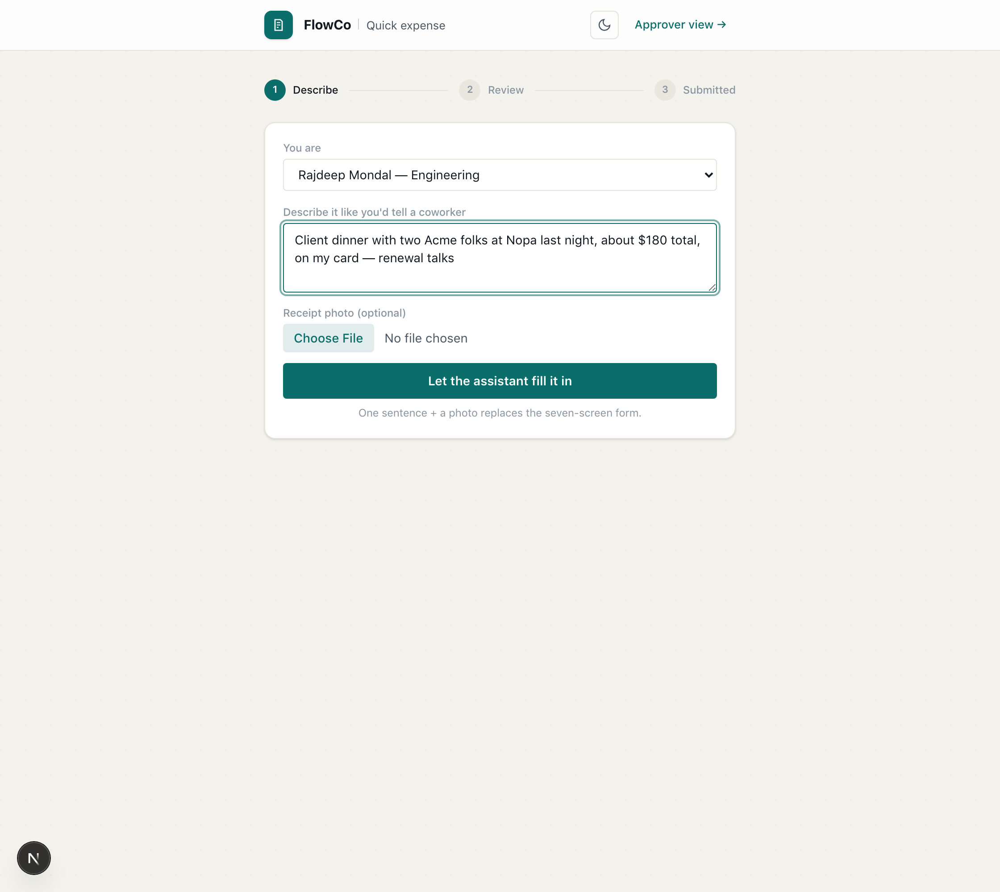
1. Describe. One sentence, the way you would tell a coworker. A receipt photo is optional. The person picks their name from a short list; the cost center and GL code come from their department, so there is no dropdown to hunt through.
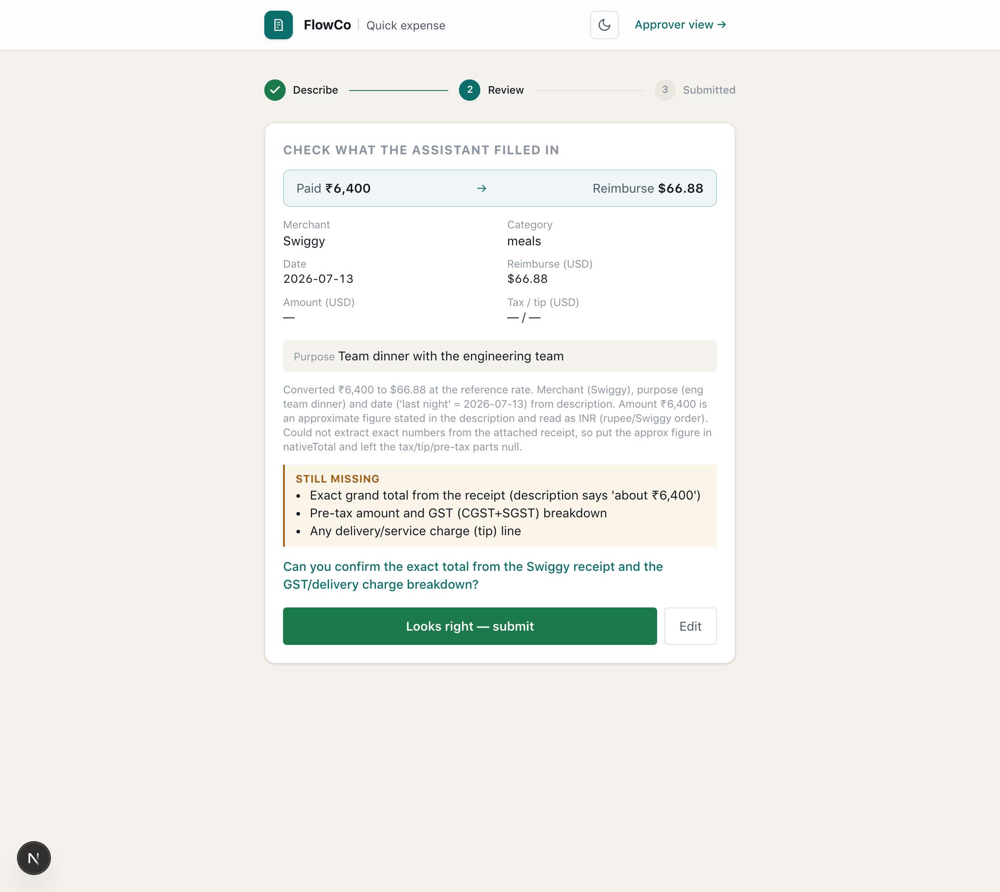
2. Confirm. The model fills every field and shows the draft back, the OCR-shown-back pattern from the brief. The top line: "about ₹6,400" comes back as ₹6,400 paid, $66.88 to reimburse, converted in code, never a $6,400 claim. A plain list names what is still missing, and the assistant asks for the exact total rather than pretending an approximate one is exact.
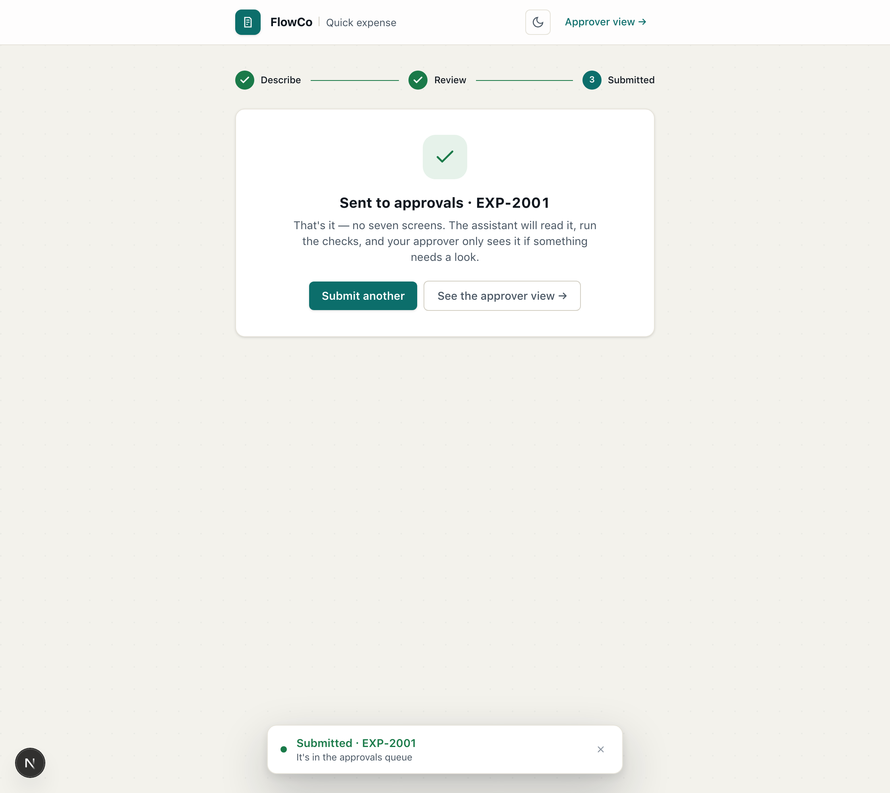
3. Sent, in under a minute
One tap drops it into the approver's queue, where triage runs on it like any other case. A sentence, a confirm, a tap.
One engine, two surfaces. A relative date like "last night" resolves to a real date, the category is inferred from the merchant, and the cap is enforced downstream where it belongs.
FlowCo · Approvals Triage · Walkthrough13 / 15
14Stack, deployment, and what comes next
A prototype with the seams a public AI demo needs
The brief said a rough prototype is fine, and this is one. But the seams where an applied-AI product lives or dies are real, because that is the part of the job I wanted to show.
The stack
Next.js 16 on Vercel serverless, with routes sized for 10 to 30 second vision calls.
claude-opus-4-8 through the Anthropic SDK: vision over photo and PDF receipts, schema-constrained structured outputs validated against a Zod schema, adaptive thinking.
Supabase in production: Postgres for state, Storage for uploaded receipts, and an atomic SQL counter for the hourly model-call cap. In-memory locally, chosen by env vars.
One policy file holds the caps, the thresholds, and the FX reference rates, so Finance-style changes are data edits, not code.
Failure is a state, not a crash
Hourly model-call caps so an unattended public URL cannot burn the budget, with a plain message when spent.
A receipt that fails to load never crashes triage. The case routes to a person as unverified.
Every AI action is audited, append-only, on the case. Every decision raises an Undo.
Mock mode is labeled. With no API key the app runs its deterministic checks and says so, rather than faking model output.
What I would measure in production
Percent auto-cleared and time to decision
The value itself
Re-review loop rate
Do the drafted asks resolve in one round
False-approve rate
The guardrail metric. This is payroll money.
What I dropped, and what is next
Dropped on purpose: auth, real email and Slack sends, and a payroll write-back. None of them change whether the triage judgment is right, so the time went to the receipt reading, the ledger, and the guardrail. Next: a feedback loop from approver overrides back into the prompts, since every override is a labeled example; real sends behind the drafted messages; a policy editor so Finance changes a cap without a deploy.
On tooling: I built this with Claude Code doing the implementation alongside me; the architecture, the decision rights, the probes, and every routing rule in this document are mine, and I read what shipped.
FlowCo · Approvals Triage · Walkthrough14 / 15
15In one line
The assistant turns digging into deciding, and is never handed the decision itself.
That one rule is what makes the auto-clear lane safe to trust, the reconciliation honest, and the failure story fixable. Everything in this document sits on it: thirty-eight live cases, every reason a case stops, receipt vision, currency conversion in code, the duplicate call, the not-a-receipt catch, and the conversational submit.
See it live
flowco-two.vercel.app
Click Run assistant triage, then open EXP-1013. Use Reset demo to start over.
Read the build
github.com/rajdeepmondaldotcom/flowco
The triage engine, the guardrail, and the verbatim failure-story probes are all in the repo.
FlowCo · Approvals Triage
Rajdeep Mondal · Applied AI Product Leader take-home · July 2026